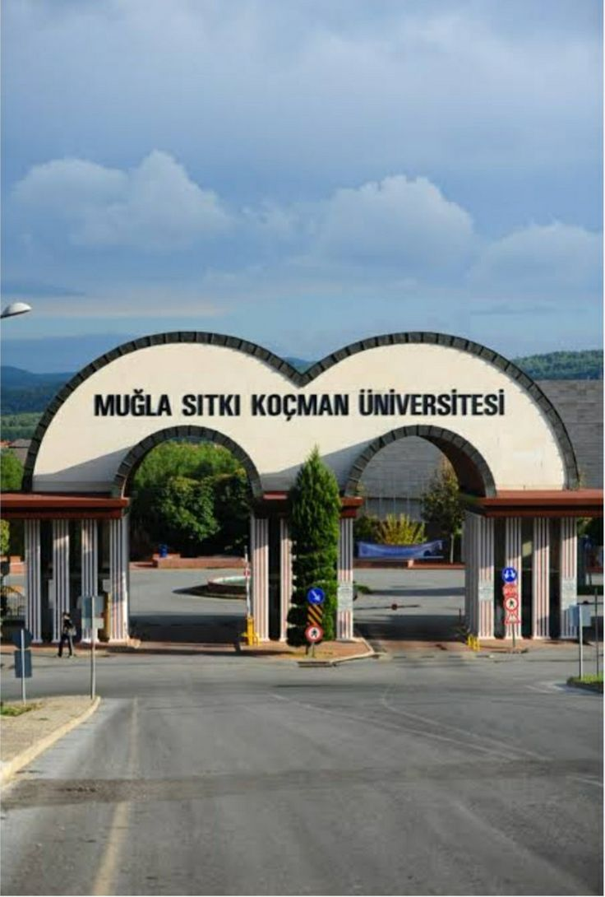
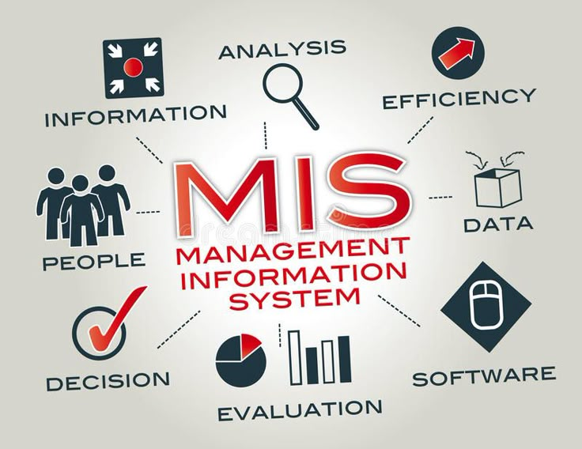

YBS hem yazılım hem de yönetim alanına giren ve iş olanaklarının olduğu bir bölüm.
Hocalarımız derslerde sürekli pratik yapmanın önemini vurguluyor.
Bu dönem yapay zeka uygulamaları, web tasarımı ve ağ modelleri gibi dersler görüyoruz; önceden de C#, Python, SQL ve Power BI görmüştük.
Şimdi ise temelden HTML görüyoruz ve işin temelini öğrenmek bayağı keyifli oluyo.


Mezun olunca özellikle yazılım alanından ilerlemeyi düşünüyorum, hem yönetim hem de yazılım tarafında ilerleyebileceğimiz güzel fırsatlar var.
SUDENUR PEKER